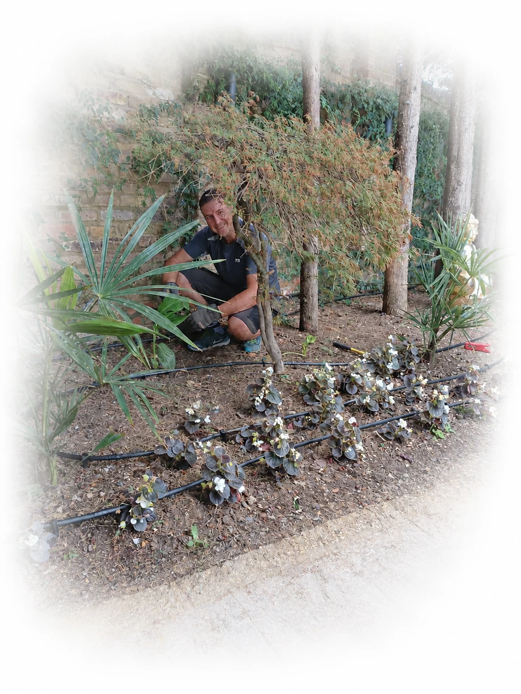
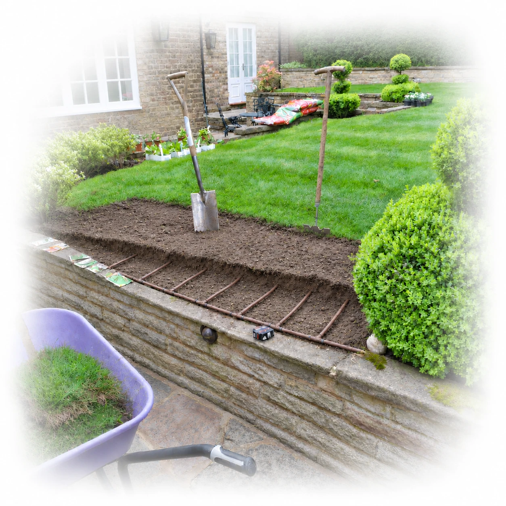

Garden & Irrigation Planning
We assess planting areas, existing or planned lawns, ground preparation needs and suitable irrigation options, along with your water source and pressure.


From the first garden assessment to installation and aftercare, we tailor irrigation to your planting, lawns and garden layout. We also prepare and lay new turf, with optional underground drip irrigation or pop-up sprinklers.
We assess planting areas, existing or planned lawns, ground preparation needs and suitable irrigation options, along with your water source and pressure.
Neat pipe routing, reliable connections and carefully planned watering zones for planting areas and lawns.
From ground preparation and levelling to quality topsoil and carefully laid turf, we create new lawns with optional irrigation installed as part of the work.
Underground drip lines or pop-up sprinklers, planned around your lawn’s shape, layout and watering needs.
Automatic timers and suitable smart controllers make watering easier across planting areas and lawns.
Targeted watering for beds, shrubs, trees and planters, with specialist underground drip systems also available for lawns.
Watering schedules tailored to the season, changing weather and the needs of new turf and established planting.
Practical guidance on watering and caring for newly laid turf, alongside irrigation checks, seasonal adjustments, winterisation and future additions.
We follow relevant irrigation trends and product improvements while prioritising reliable, serviceable systems.
We can discuss your garden, planting and practical requirements to recommend the most suitable irrigation approach.